<!DOCTYPE html>
<html lang="en">

<head>
    <meta charset="UTF-8">
    <meta name="viewport" content="width=device-width, initial-scale=1.0">
    <meta http-equiv="X-UA-Compatible" content="ie=edge">
    <title>Test usage</title>
    <!--
        Three ways to embed a Mapello-exported SVG map:

        1. Inline paste (simplest, zero dependencies):
           Paste the exported SVG content directly into <body>. No extra files or scripts needed.
           Tooltips and popovers work. The SVG is fully self-contained.
           <body>
             <svg ...>...</svg>
           </body>

        2. <object> tag (recommended for external file):
           One tag, file stays external, embedded scripts still execute.
           Tooltips and popovers work. See #container1 below.

        3.  tag (visual only, no interactivity):
           Simplest external reference, but embedded scripts do not run.
           Tooltips and popovers are disabled. See #container2 below.
    -->
</head>

<body>
    <!-- Option 2: <object> — full interactivity preserved -->
    <div id="container1">
        <object data="./gdp.svg" type="image/svg+xml" style="width:100%;height:auto;display:block;"></object>
    </div>

    <!-- Option 3:  — visual only, no tooltips/popovers -->
    <!-- <div id="container2">
        
    </div> -->
</body>

</html>
